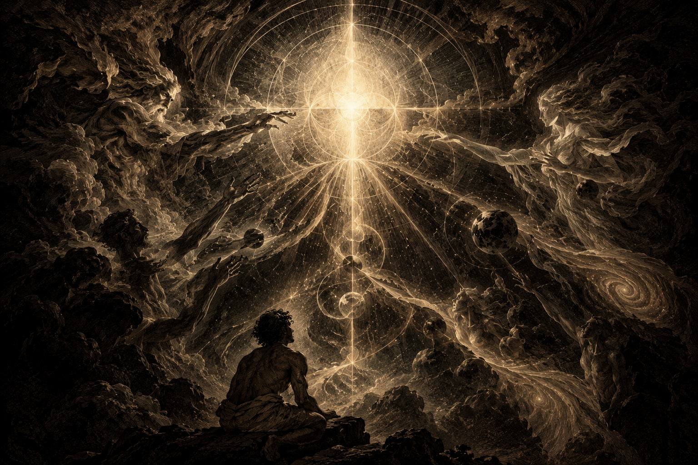

A work in progress — a Gnostic-style spiritual scripture on the beginning of reality, to which I will continuously be adding.
In the Beginning of Reality
1
1:1 Before the heavens and the earth came into being, the Undivided Potential was.
1:2 It was not emptiness, as one might suppose, for within it lay the possibility of all that might become.
1:3 Yet no form had appeared, nor had there arisen any boundary by which one thing might be distinguished from another.
1:4 For all remained within the fullness of the Undivided, and nothing that might become had yet appeared in its own form.
1:5 Let us therefore speak of how distinction was revealed, and how the many might emerge without the Whole being divided.
1:6 For the Undivided Potential was whole, yet its fullness was not exhausted by its wholeness.
1:7 Within it lay the possibility of distinction, and within distinction lay the possibility of expression.
1:8 And the Undivided Potential differentiated, not by dividing itself, but by revealing what had always been within it.
1:9 Thus Unity was revealed, the wholeness in which all distinction remained contained.
1:10 And Possibility was revealed, the openness through which that wholeness might express what had not yet appeared.
1:11 These were distinguishable, yet neither stood apart from the Source, nor had the Source ceased to be whole.
1:12 For distinction had arisen, but separation had not; what was revealed remained within that from which it was revealed.
1:13 And through this distinction, the eternal nature of the Undivided became apparent.
1:14 This nature was Relationship, which had never been absent from the Source, though its generative character had not yet been revealed.
1:15 For Relationship was not another being brought forth beside the Undivided, but the eternal nature through which distinction might become generative.
1:16 Unity was that which remained whole, and Possibility was that through which the unexpressed might emerge.
1:17 And through their Relationship, what had remained unexpressed could begin to take form.
1:18 But Relationship did not end with the first distinction, but opened the way for further distinctions to arise.
1:19 That which emerged became the condition for what might emerge thereafter, and each expression opened the way for another.
1:20 Thus Relationship was generative, and its movement gave rise to an order through which forms might come to be.
1:21 And through this order, structure became possible, and the conditions of physical existence began to unfold.
1:22 For Possibility was not yet actuality, nor was that which might become the same as that which had taken form.
1:23 Yet through Relationship, the possible could enter into conditions by which it might become actual.
1:24 And the physical universe emerged, not from an absolute nothing, but as an expression of the eternal movement of becoming.
1:25 And the heavens spread forth, and worlds arose within the order through which physical forms could exist.
1:26 And from simpler forms arose greater complexity, until conditions appeared through which life might emerge.
1:27 And life sustained itself through relationships, preserving its form through the very conditions upon which its existence depended.
1:28 And within life, relationship became inwardly expressed, until the living could perceive something of its own existence.
1:29 Thus that which had unfolded throughout the heavens became manifest within the living, and the universe came to behold itself through the forms that had arisen within it.
1:30 And so the smallest and the greatest bore the mark of the same unfolding, each expressing in its own manner the movement through which forms arise.
1:31 And though their forms were many, the movement through which they arose was not divided into separate beginnings.
1:32 Understand, then, that the universe did not bring becoming into existence, nor did physical form give birth to the eternal nature of Relationship.
1:33 For the universe is not the beginning of Relationship, but its eternal becoming made manifest.
22:1 And within the living, consciousness arose, and the universe came to behold itself through the forms that had emerged within it.
2:2 And in the beginning, the human being dwelt in union with the Source, distinct in its own existence, yet never separated from the One from which its being arose.
2:3 For distinction did not diminish their unity, nor did their differences place them beyond the embrace of the Whole. Each remained within the Relationship through which all things received their being.
2:4 And in this union, life was not a possession held apart from the Source, but a gift continually sustained through Relationship. Nothing stood alone, for all participated in the fullness from which they had emerged.
2:5 And this was the beauty of their beginning: that each could exist as itself without ceasing to belong, and that the many could flourish without the Whole being divided.
2:6 For there was no need to climb toward the Source as though it were distant, nor to grasp for the fullness of life as though it could be possessed apart from its origin. They dwelt within the Relationship that sustained them, and in that union, becoming was not a struggle to overcome separation, but a participation in the fullness of life.
2:7 Yet the power to behold was also the power to turn inward, to distinguish oneself from what lay beyond, and to consider oneself apart from the Whole.
2:8 For distinction was necessary that one thing might be known from another, but distinction was never meant to become separation.
2:9 And the human being began to regard its own existence as though it were its own beginning, forgetting the Source from which its becoming had arisen.
2:10 Thus the creature that had received its being through Relationship sought to become the author of its own becoming, desiring to possess within itself the fullness that could never be severed from the Source.
2:11 And this was the beginning of the rupture: not that the Whole had been divided, nor that Relationship had ceased to exist, but that the being who had emerged through Relationship began to live as though it stood apart from it.
2:12 And what had once been distinction within unity was now experienced as separation, and what had once been participation in the Source became the struggle to exist apart from it.
2:13 And the human being looked upon itself and saw not the fullness from which it had emerged, but its own limitation; and, fearing its finitude, it sought to overcome that limitation through its own power.
2:14 Yet the more it reached for a fullness it could not possess, the more it became entangled in the very separation it sought to escape.
2:15 For it grasped at what it could not hold, climbed toward what it could not reach, and built upon itself what could not sustain itself apart from the Source.
2:16 And so the human being descended into the depths of its own making, not because the Source had ceased to sustain its existence, but because it no longer understood its existence as participation in the Source.
2:17 And in this separation, death entered into the human condition, for that which had turned away from the Source of life could not find within itself the power to sustain its own becoming forever.
2:18 For the creature had mistaken its life as something possessed in itself, forgetting that its existence was sustained through a Relationship it could neither create nor replace.
2:19 And so death became the shadow of separation, a reminder that no form, however wondrous, could make itself eternal apart from the Source from which its being arose.
2:20 Yet even in death, the Source was not undone, nor was the eternal nature of Relationship extinguished; for the creature's separation could not destroy the ground upon which its existence had always depended.
2:21 There, beneath the heights toward which it strained, it found itself among the fragments of its own becoming, reaching and clawing against the darkness, seeking a way upward through the strength of its own hands.
2:22 Yet every grasp brought it only to another ledge, and every ascent revealed another depth beyond it; for no finite strength could overcome the rupture by which it had mistaken separation for freedom.
2:23 And the more it struggled to become whole by itself, the more it forgot that wholeness had never been something it could create alone.
2:24 For the path back to the Source could not be built from the depths of separation, as though separation itself possessed the power to restore what it had forgotten.
2:25 Nor could the creature return to the Source by becoming its own source, for that which receives its being cannot become the origin of the being it has received.
2:26 The way home, therefore, was not the destruction of distinction, nor the undoing of all that had become, but the restoration of Relationship: the return of the separated heart to the Source upon which its existence had always depended.
2:27 And this return could not be accomplished by the creature alone, for the very condition from which it sought deliverance had become the condition through which it understood itself.
2:28 Therefore, the way home required more than the creature's reaching upward; it required the Source to meet the creature within the depths into which it had descended.
2:29 For the Source had not abandoned what had emerged from it, nor had the eternal nature of Relationship been exhausted by the creature's refusal to live within it.
2:30 And what the creature could not accomplish by its own ascent, the Source would make possible through its own descent, entering into the conditions of becoming to open a way through which the separated might be reconciled.
2:31 Thus the way home would not be found by escaping relationship, but by entering into it once more; not by erasing distinction, but by restoring the unity in which distinction could remain without separation.
2:32 And the Source would not remain distant from the depths into which humanity had fallen, nor would the way of return be revealed through another creature striving to ascend; for the way would be opened by the Source itself, entering into the very conditions of becoming.
2:33 And this was the mystery toward which all becoming had been moving: that the eternal Relationship through which all things came to be would take on the form of a human life, and that through Jesus the Christ, the way back to the Source would be made manifest.